Make figures for yap1 dataset
Michelle Meier
18. May 2026
Last updated: 2026-05-18
Checks: 7 0
Knit directory: yap1_meox1_paper/
This reproducible R Markdown analysis was created with workflowr (version 1.7.1). The Checks tab describes the reproducibility checks that were applied when the results were created. The Past versions tab lists the development history.
Great! Since the R Markdown file has been committed to the Git repository, you know the exact version of the code that produced these results.
Great job! The global environment was empty. Objects defined in the global environment can affect the analysis in your R Markdown file in unknown ways. For reproduciblity it’s best to always run the code in an empty environment.
The command set.seed(20260119) was run prior to running
the code in the R Markdown file. Setting a seed ensures that any results
that rely on randomness, e.g. subsampling or permutations, are
reproducible.
Great job! Recording the operating system, R version, and package versions is critical for reproducibility.
Nice! There were no cached chunks for this analysis, so you can be confident that you successfully produced the results during this run.
Great job! Using relative paths to the files within your workflowr project makes it easier to run your code on other machines.
Great! You are using Git for version control. Tracking code development and connecting the code version to the results is critical for reproducibility.
The results in this page were generated with repository version 27ec953. See the Past versions tab to see a history of the changes made to the R Markdown and HTML files.
Note that you need to be careful to ensure that all relevant files for
the analysis have been committed to Git prior to generating the results
(you can use wflow_publish or
wflow_git_commit). workflowr only checks the R Markdown
file, but you know if there are other scripts or data files that it
depends on. Below is the status of the Git repository when the results
were generated:
Ignored files:
Ignored: .DS_Store
Ignored: .Rhistory
Ignored: .Rproj.user/
Ignored: analysis/.DS_Store
Ignored: code/.DS_Store
Ignored: code/scRNAseq/.DS_Store
Ignored: code/scRNAseq/analysis/.DS_Store
Ignored: code/scRNAseq/pre_processing/.DS_Store
Ignored: code/snATACseq/
Ignored: data/.DS_Store
Ignored: data/genesets/
Ignored: data/input/
Ignored: output/.DS_Store
Ignored: output/analysis/
Ignored: output/data/
Ignored: output/figures/
Ignored: renv/library/
Ignored: renv/staging/
Note that any generated files, e.g. HTML, png, CSS, etc., are not included in this status report because it is ok for generated content to have uncommitted changes.
These are the previous versions of the repository in which changes were
made to the R Markdown (analysis/figures_yap1_dataset.Rmd)
and HTML (docs/figures_yap1_dataset.html) files. If you’ve
configured a remote Git repository (see ?wflow_git_remote),
click on the hyperlinks in the table below to view the files as they
were in that past version.
| File | Version | Author | Date | Message |
|---|---|---|---|---|
| Rmd | 27ec953 | Michelle Meier | 2026-05-18 | wflow_publish(c("analysis/exploration_D10025_yap1_dataset_transition_scores.Rmd", |
| html | b70ba2b | Michelle Meier | 2026-05-12 | Build site. |
| Rmd | 70f6708 | Michelle Meier | 2026-05-12 | wflow_publish("analysis/figures_yap1_dataset.Rmd") |
| html | ffc604c | Michelle Meier | 2026-05-11 | Build site. |
| Rmd | 5941a6b | Michelle Meier | 2026-05-11 | wflow_publish("analysis/figures_yap1_dataset.Rmd") |
| html | 627327d | Michelle Meier | 2026-03-05 | Build site. |
| Rmd | 7c06b83 | Michelle Meier | 2026-03-05 | wflow_publish(c("analysis/figures_meox1_dataset.Rmd", "analysis/figures_yap1_dataset.Rmd")) |
| html | a90cc77 | Michelle Meier | 2026-02-16 | Build site. |
| Rmd | 06f2cda | Michelle Meier | 2026-02-16 | wflow_publish(c("analysis/figures_meox1_dataset.Rmd", "analysis/figures_yap1_dataset.Rmd", |
| html | a82bb26 | Michelle Meier | 2026-02-09 | Build site. |
| Rmd | 7643fa0 | Michelle Meier | 2026-02-09 | wflow_publish(c("analysis/figures_meox1_dataset.Rmd", "analysis/figures_yap1_dataset.Rmd", |
| html | 68b5a89 | Michelle Meier | 2026-02-09 | Build site. |
| Rmd | 5353707 | Michelle Meier | 2026-02-09 | wflow_publish("analysis/figures_yap1_dataset.Rmd") |
Introduction
Make figures for all levels of the yap1 dataset.
Load libraries
suppressPackageStartupMessages({
library(tidyverse)
library(here)
library(Seurat)
library(scDblFinder)
library(ggpubr)
library(clustree)
library(patchwork)
library(scater)
library(scran)
library(qs2)
library(chisq.posthoc.test)
})Load data
level_01 <- qs_read(here('output/data/Datsets/paper/D10025_yap1_dataset_Level_01_annotated.qs2'))
level_02 <- qs_read(here('output/data/Datsets/paper/D10025_yap1_dataset_Level_02_annotated.qs2'))
level_03 <- qs_read(here('output/data/Datsets/paper/D10025_yap1_dataset_Level_03_annotated.qs2'))load mixing metric as well
mixing_metric <- qs_read(here('output/analysis/D10025_yap1_dataset/MixingMetric/D10025_yap1_dataset_Level_03_mixing_metric.qs2'))load DEGs
hippo_gene_degs <- read_csv(here("output/analysis/D10025_yap1_dataset/DEGs/Level_03_DEG_hippo_targets_mutVSwt_L3_celltype_fc0.00_minpct_0.00.csv"), show_col_types = F)
all_degs <- read_csv(here("output/analysis/D10025_yap1_dataset/DEGs/Level_03_DEG_mutVSwt_L3_celltype_fc0.00_minpct_0.01.csv"), show_col_types = F)load GO
go_terms <- qs_read(here("output/analysis/D10025_yap1_dataset/enrichR/D10025_yap1_dataset_markers_L3_celltype_top100_enrichR.qs2"))Load gene sets + paper settings
source(here("code/scRNAseq/general_scripts/yap1_meox1_important_genes.R"))
source(here("code/scRNAseq/general_scripts/yap1_meox1_paper_settings.R"))
names(genotype_colours) <- c("wildtype", "yap1_mutant")Plotting orders
level_01_order <- c(
"Endothelial",
"Endocardium",
"Hematopoietic",
"Erythrocyte",
"Immune",
"Neuronal",
"Fibroblast",
"Epithelial_Fibroblast",
"Epithelial",
"Eye_lens",
"Chromatophore")
level_02_id_order <- c(
"LEC_01",
"VEC_01",
"VEC_02",
"VEC_03",
"AEC_01",
"AEC_02",
"AEC_03",
"AEC_04",
"AEC_05",
"cycling_EC_01",
"Endocardium_01"
)
level_02_celltpe_order <- c(
"LEC",
"VEC",
"AEC",
"cycling_EC",
"Endocardium"
)
level_03_celltpe_order <- c(
"LEC",
"preLEC",
"hmVEC",
"mVEC",
"cVEC",
"iVEC"
)Plotting colours
level_02_id_colours <- c(
"#a1d99b",
"#6baed6",
"#4292c6",
"#2171b5",
"#fee0d2",
"#fcbba1",
"#fc9272",
"#fb6a4a",
"#ef3b2c",
"#ffffd4",
"#d9d9d9")
names(level_02_id_colours) <- level_02_id_order
level_02_celltype_colours <- c(
"#a1d99b",
"#6baed6",
"#fc9272",
"#ffffd4",
"#d9d9d9")
names(level_02_celltype_colours) <- level_02_celltpe_order
level_03_celltype_colours <- c(
"#41ae76",
"#a1d99b",
"#9ecae1",
"#6baed6",
"#4292c6",
"#084594")
names(level_03_celltype_colours) <- level_03_celltpe_orderPlotting themes
plot_sizing <- theme_bw()+ theme(axis.title = element_text(size = 16),
axis.text = element_text(size = 14, colour = "black"),
plot.title = element_text(size = 18),
legend.text = element_text(size = 14),
legend.title = element_blank())
plot_sizing_seurat <- theme(axis.title = element_text(size = 16),
axis.text = element_text(size = 14, colour = "black"),
plot.title = element_text(size = 18),
legend.text = element_text(size = 14))
rotate_x <- theme(axis.text.x = element_text(angle = 90, vjust = 0.5, hjust=1))
strip_fix <- theme(strip.background = element_rect(fill = "white"),
strip.text = element_text(size = 14))directories
save_dir <- here("output/figures")
name <- "yap1_dataset"LEVEL 01 - ALL CELLS
name_current <- sprintf("%s_Level_01", name)n cells
level_01 %>% ncol()[1] 31415n cells per genotype
level_01$Genotype %>% table().
wildtype yap1_mutant
18985 12430 UMAPs
Level 01 UMAPs don’t have a colour scheme.
#clusterID
make_dim_umap(seurat = level_01,
group = "L1_cluster_id",
width = 5, height = 5,
path = save_dir,
name = name_current)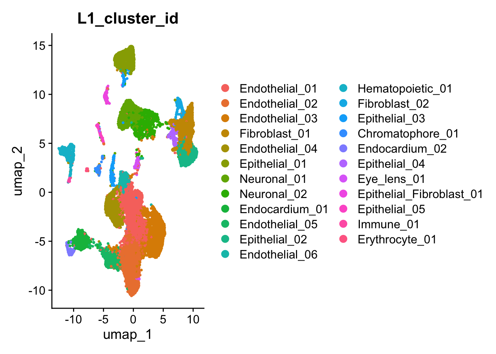
| Version | Author | Date |
|---|---|---|
| 68b5a89 | Michelle Meier | 2026-02-09 |
#celltype
make_dim_umap(seurat = level_01,
group = "L1_celltype",
width = 5, height = 5,
path = save_dir,
name = name_current)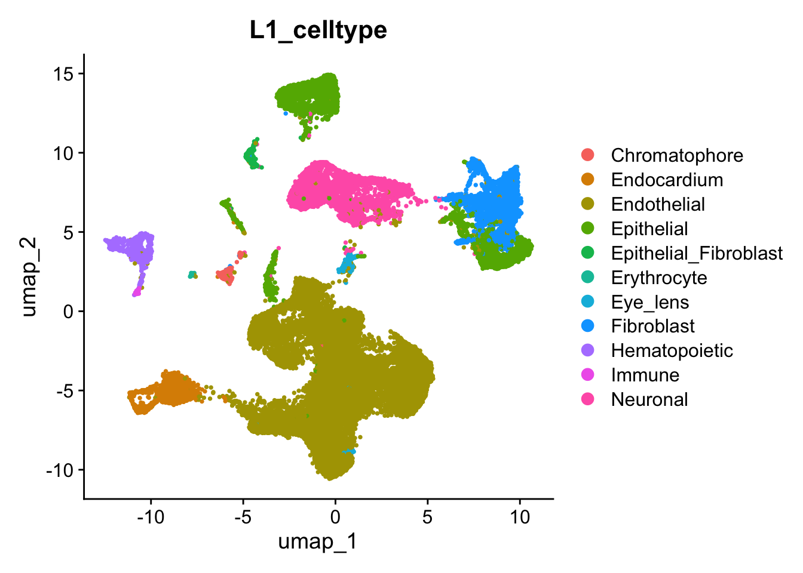
| Version | Author | Date |
|---|---|---|
| 68b5a89 | Michelle Meier | 2026-02-09 |
#genotype
make_dim_umap(seurat = level_01,
group = "Genotype",
width = 5, height = 5,
path = save_dir,
name = name_current,
colours = genotype_colours)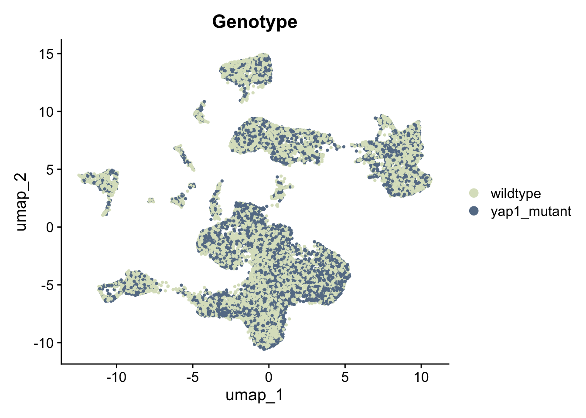
| Version | Author | Date |
|---|---|---|
| 68b5a89 | Michelle Meier | 2026-02-09 |
Dotplot
level_01_relevel <- level_01
level_01_relevel <- SetIdent(level_01_relevel, value="L1_celltype")
Idents(level_01_relevel) <- factor(level_01_relevel@active.ident, level_01_order)
dotplot <- DotPlot(object = level_01_relevel,
features = level_01_annotation_genes,
cluster.idents = F,
cols = expression_colours) + RotatedAxis() + coord_flip() + rotate_x + ylab("") + xlab("")
filename <- sprintf('%s/%s_L1_celltype_annotation.pdf', save_dir, name_current)
ggsave(filename,
dotplot,
device="pdf",
width=5,
height=7 )
dotplot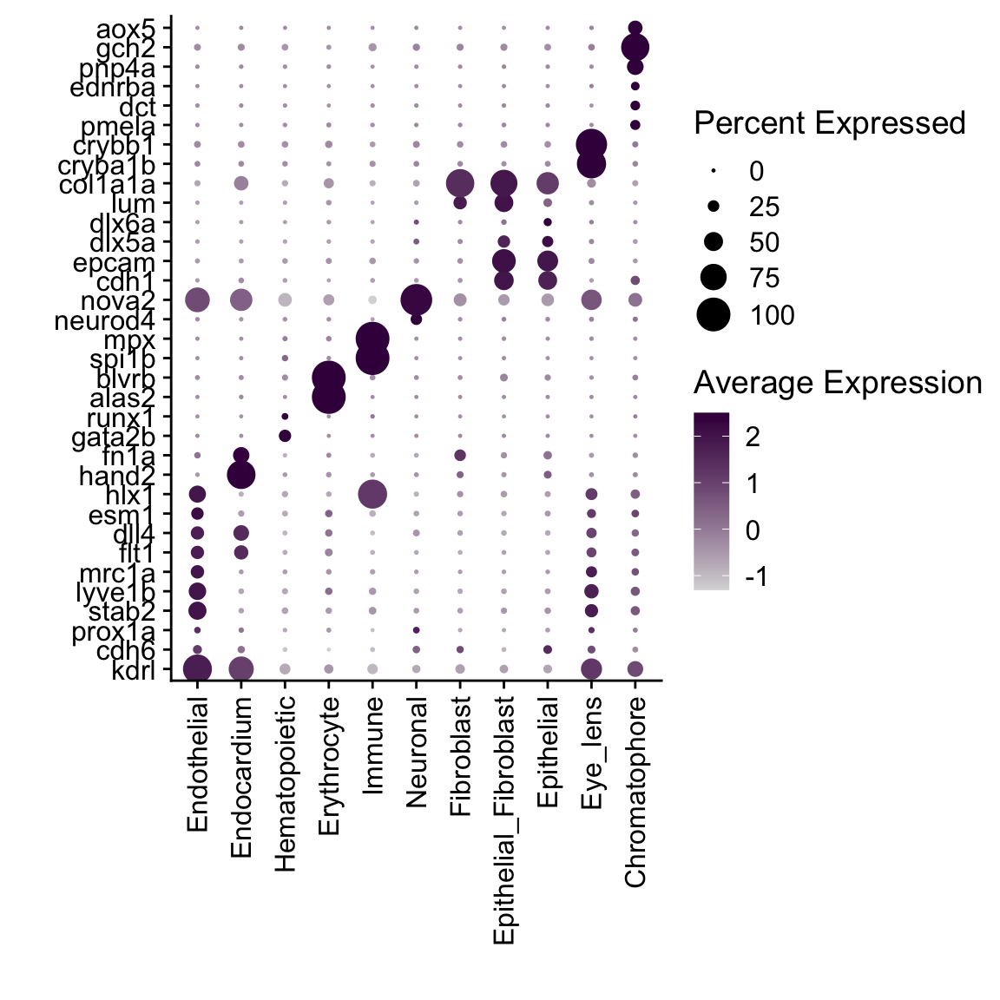
| Version | Author | Date |
|---|---|---|
| 68b5a89 | Michelle Meier | 2026-02-09 |
Barplot
barplot <- level_01@meta.data %>%
mutate(., Genotype = factor(Genotype, levels = names(genotype_colours)),
L1_celltype = factor(L1_celltype, levels =level_01_order) )%>%
group_by(Genotype, L1_celltype, .drop=FALSE) %>%
summarise(., count =n()) %>%
ggplot(., aes(x =L1_celltype, y = count, fill = Genotype)) +
geom_bar(stat="identity", position = "fill") +
plot_sizing + rotate_x +
scale_fill_manual(values = genotype_colours)+
ylab("proportion") + xlab("")`summarise()` has grouped output by 'Genotype'. You can override using the
`.groups` argument.filename <- sprintf('%s/%s_L1_celltype_genotype_barplot.pdf', save_dir, name_current)
ggsave(filename,
barplot,
device="pdf",
width=7,
height=4)
barplot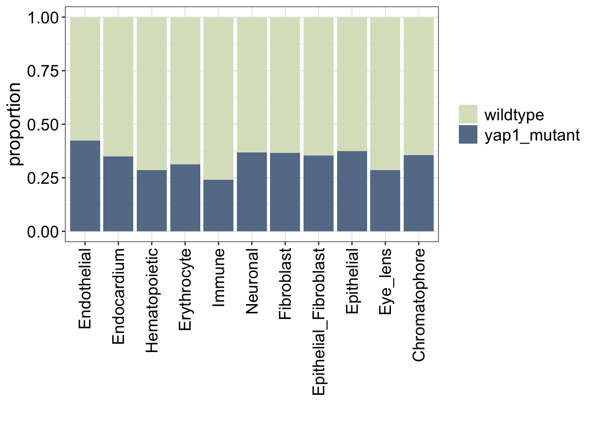
| Version | Author | Date |
|---|---|---|
| 68b5a89 | Michelle Meier | 2026-02-09 |
LEVEL 02 - ALL ENDOTHELIAL CELLS
name_current <- sprintf("%s_Level_02", name)n cells
level_02 %>% ncol()[1] 19834n cells per genotype
level_02$Genotype %>% table().
wildtype yap1_mutant
11578 8256 UMAPs
level_02$L2_cluster_id <- factor(x = level_02$L2_cluster_id,levels = level_02_id_order)
#clusterID
make_dim_umap(seurat = level_02,
group = "L2_cluster_id",
width = 5, height = 5,
path = save_dir,
colours = level_02_id_colours,
name = name_current)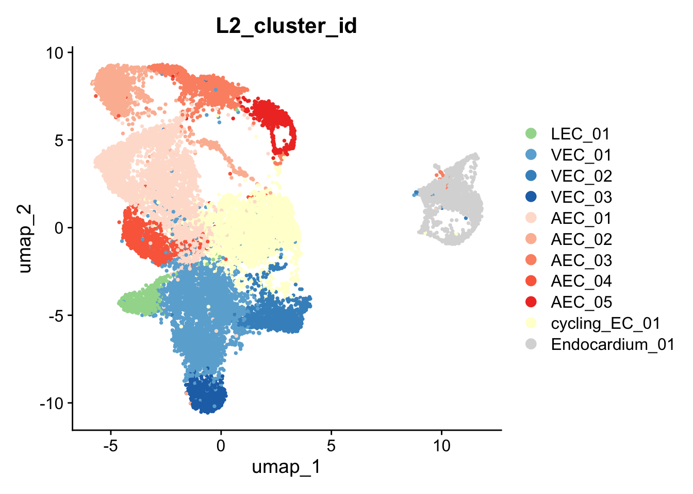
| Version | Author | Date |
|---|---|---|
| 68b5a89 | Michelle Meier | 2026-02-09 |
level_02$L2_celltype <- factor(x = level_02$L2_celltype,levels = level_02_celltpe_order)
#celltype
make_dim_umap(seurat = level_02,
group = "L2_celltype",
width = 5, height = 5,
path = save_dir,
colours = level_02_celltype_colours,
name = name_current)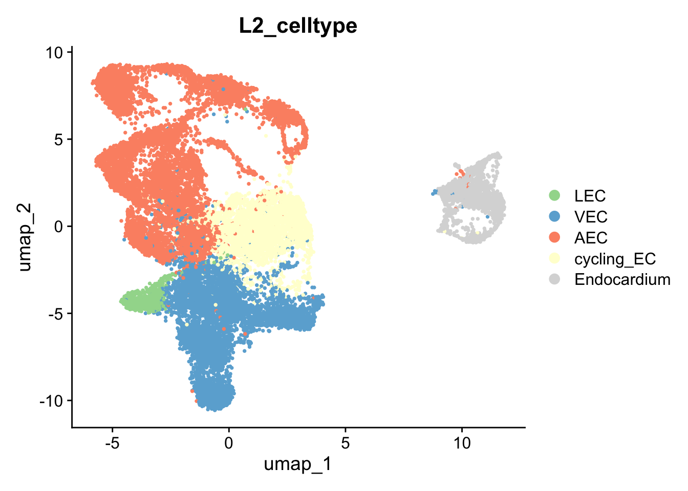
| Version | Author | Date |
|---|---|---|
| 68b5a89 | Michelle Meier | 2026-02-09 |
#genotype
make_dim_umap(seurat = level_02,
group = "Genotype",
width = 5, height = 5,
path = save_dir,
name = name_current,
colours = genotype_colours)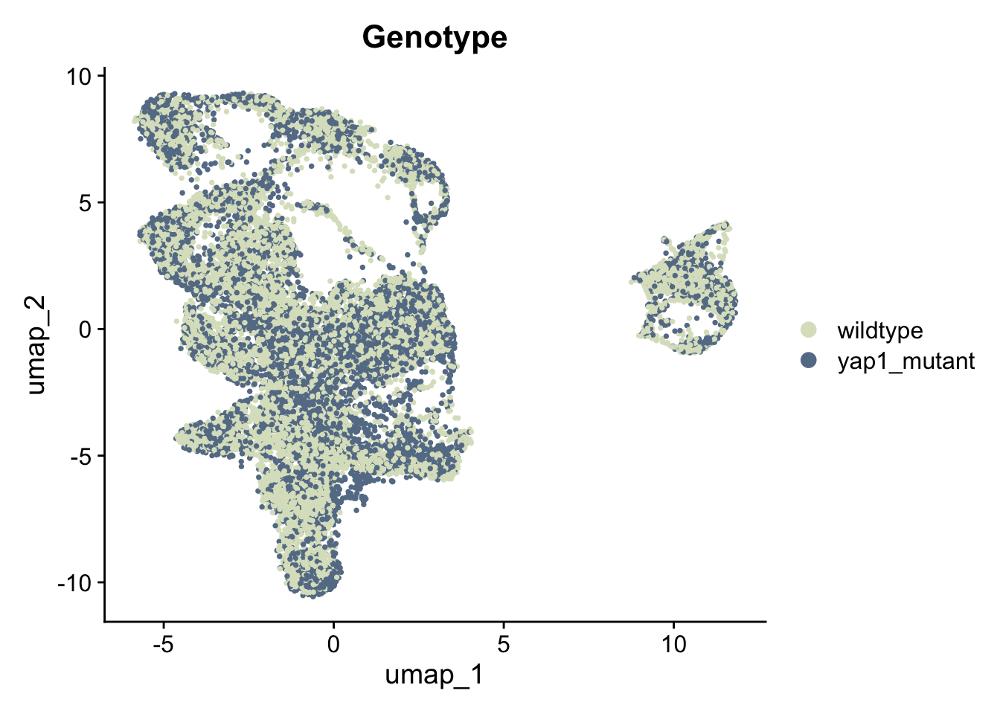
| Version | Author | Date |
|---|---|---|
| 68b5a89 | Michelle Meier | 2026-02-09 |
Dotplot
level_02_relevel <- level_02
level_02_relevel <- SetIdent(level_02_relevel, value="L2_cluster_id")
Idents(level_02_relevel) <- factor(level_02_relevel@active.ident, level_02_id_order)
dotplot <- DotPlot(object = level_02_relevel,
features = level_02_annotation_genes,
cluster.idents = F,
cols = expression_colours) + RotatedAxis() + coord_flip() + rotate_x + ylab("") + xlab("")
filename <- sprintf('%s/%s_L2_cluster_id_annotation.pdf', save_dir, name_current)
ggsave(filename,
dotplot,
device="pdf",
width=5,
height=5)
dotplot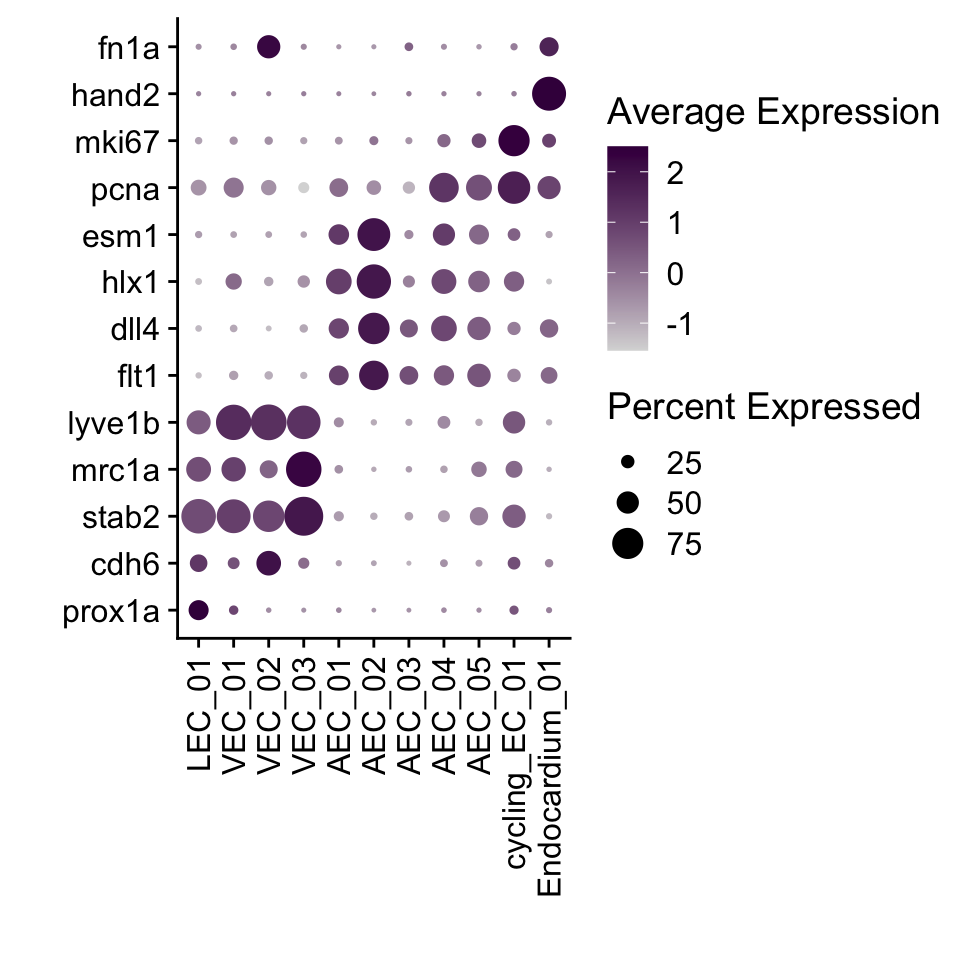
| Version | Author | Date |
|---|---|---|
| 68b5a89 | Michelle Meier | 2026-02-09 |
Barplot
barplot <- level_02@meta.data %>%
mutate(., Genotype = factor(Genotype, levels = names(genotype_colours)),
L2_cluster_id = factor(L2_cluster_id, levels =level_02_id_order) )%>%
group_by(Genotype, L2_cluster_id, .drop=FALSE) %>%
summarise(., count =n()) %>%
ggplot(., aes(x =L2_cluster_id, y = count, fill = Genotype)) +
geom_bar(stat="identity", position = "fill") +
plot_sizing + rotate_x +
scale_fill_manual(values = genotype_colours)+
ylab("proportion") + xlab("")`summarise()` has grouped output by 'Genotype'. You can override using the
`.groups` argument.filename <- sprintf('%s/%s_L2_cluster_id_genotype_barplot.pdf', save_dir, name_current)
ggsave(filename,
barplot,
device="pdf",
width=7,
height=4)
barplot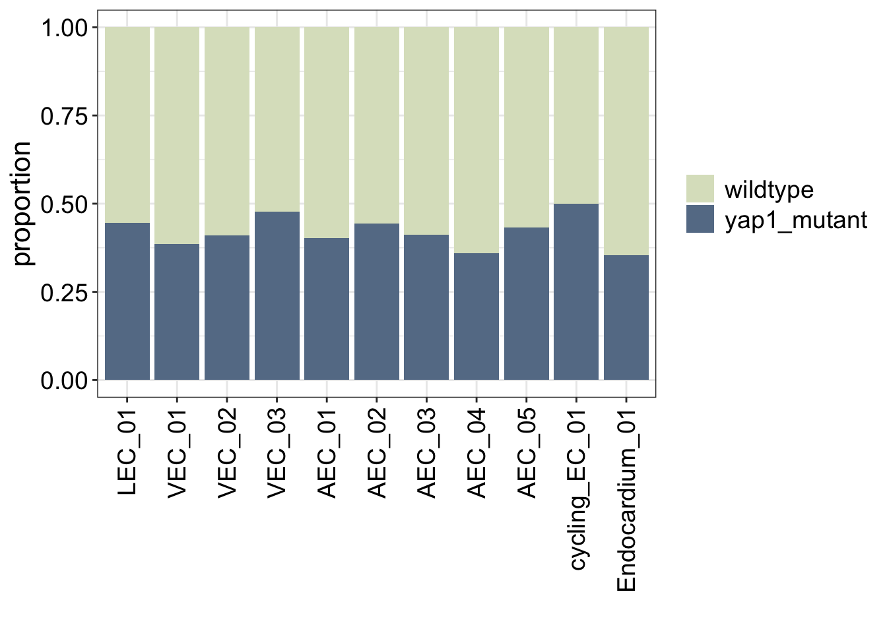
| Version | Author | Date |
|---|---|---|
| 68b5a89 | Michelle Meier | 2026-02-09 |
LEVEL 03 - VEC AND LEC
name_current <- sprintf("%s_Level_03", name)n cells
level_03 %>% ncol()[1] 6557n cells per genotype
level_03$Genotype %>% table().
wildtype yap1_mutant
3895 2662 UMAPs
level_03$L3_celltype <- factor(x = level_03$L3_celltype,levels = level_03_celltpe_order)
#celltype
make_dim_umap(seurat = level_03,
group = "L3_celltype",
width = 5, height = 5,
path = save_dir,
colours = level_03_celltype_colours,
name = name_current)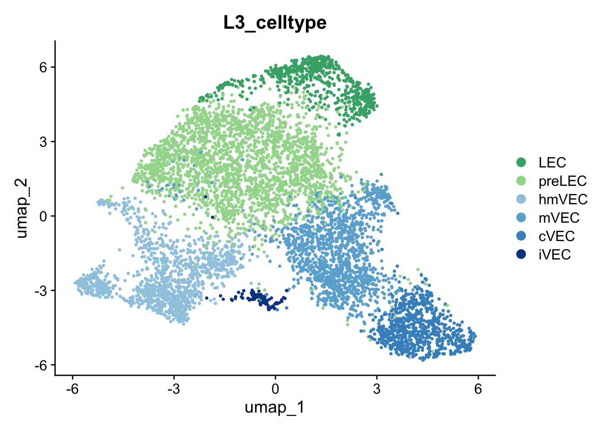
| Version | Author | Date |
|---|---|---|
| 68b5a89 | Michelle Meier | 2026-02-09 |
#genotype
make_dim_umap(seurat = level_03,
group = "Genotype",
width = 5, height = 5,
path = save_dir,
name = name_current,
colours = genotype_colours)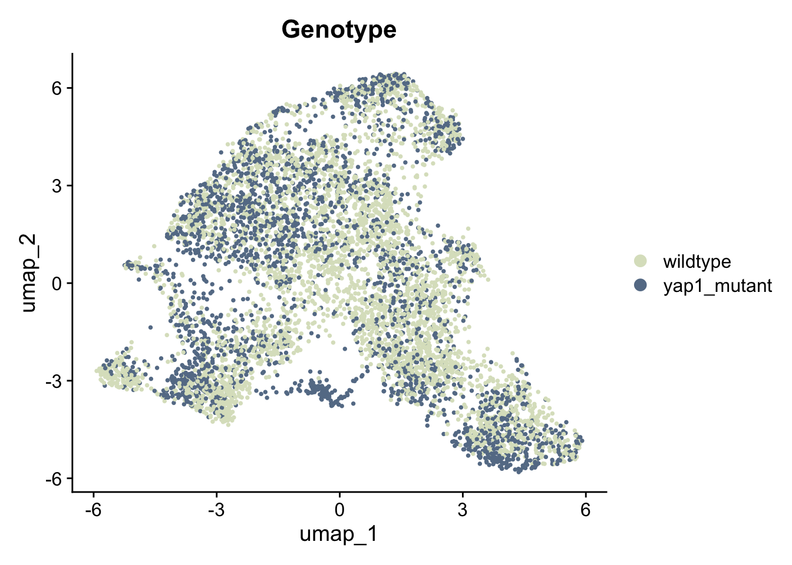
| Version | Author | Date |
|---|---|---|
| 68b5a89 | Michelle Meier | 2026-02-09 |
UMAPs - gene expression
genes_to_plot <-c("pcna", "mki67", "cdh6", "ccn2a", "ccn1", "prox1a")
plot_list <- lapply(genes_to_plot, function(gene){
make_feature_umap(seurat = level_03,
feature = gene,
width = 5, height = 5,
path = save_dir,
name = name_current)
})
wrap_plots(plot_list, ncol = 3)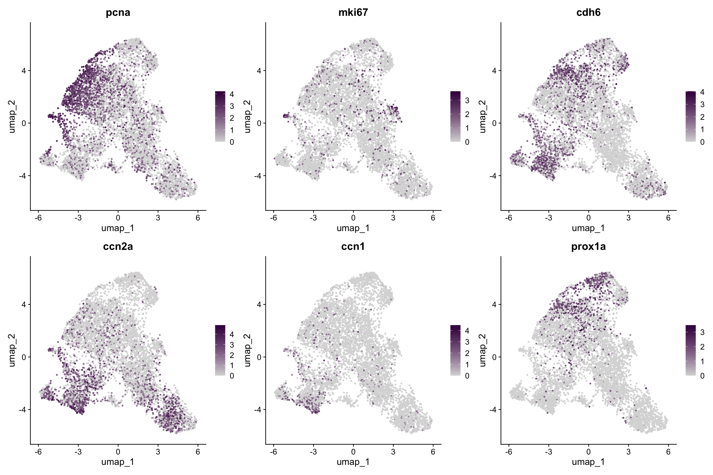
| Version | Author | Date |
|---|---|---|
| 68b5a89 | Michelle Meier | 2026-02-09 |
UMAPs - gene scores
genescores_to_plot <-c("hippo_1", "mapk_1", "wnt_1", "ap1_1")
plot_list <- lapply(genescores_to_plot, function(genescore){
make_genescore_umap(seurat = level_03,
feature = genescore,
width = 5, height = 5,
path = save_dir,
name = name_current)
})
wrap_plots(plot_list, ncol = 2)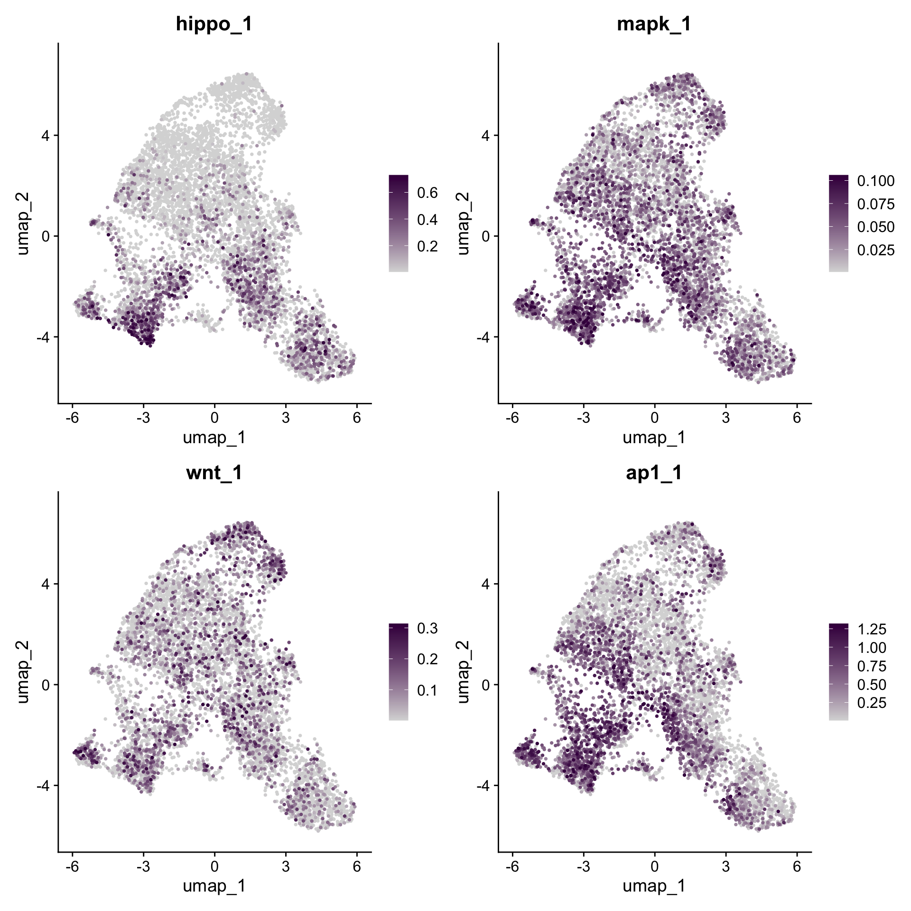
| Version | Author | Date |
|---|---|---|
| 68b5a89 | Michelle Meier | 2026-02-09 |
Split by genotype
genescores_to_plot <-c("hippo_1", "mapk_1", "wnt_1", "ap1_1")
plot_list <- lapply(genescores_to_plot, function(genescore){
make_genescore_split_umap(seurat = level_03,
feature = genescore,
width = 10, height = 5,
path = save_dir,
split = "Genotype",
name = name_current)
})
wrap_plots(plot_list, ncol = 2)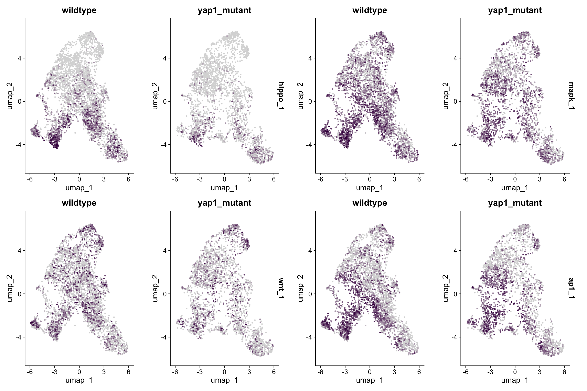
| Version | Author | Date |
|---|---|---|
| 68b5a89 | Michelle Meier | 2026-02-09 |
UMAPs - transition scores (mature)
p1 <- make_genescore_umap(seurat = level_03,
feature = "EMBO_LEC_score_1",
width = 5, height = 5,
path = save_dir,
colours = c("#d9d9d9", "darkgreen"),
name = name_current)
p2 <- make_genescore_umap(seurat = level_03,
feature = "EMBO_VEC_score_1",
width = 5, height = 5,
path = save_dir,
colours = c("#d9d9d9", "#406880"),
name = name_current)
p1 + p2 + plot_layout(ncol = 2)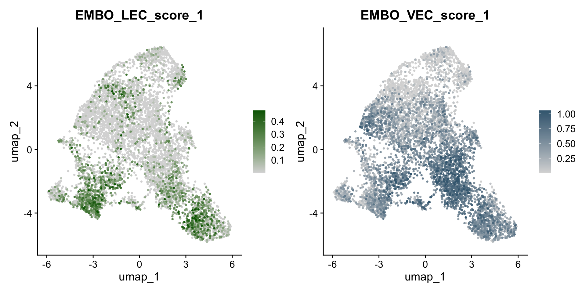
| Version | Author | Date |
|---|---|---|
| 68b5a89 | Michelle Meier | 2026-02-09 |
transition score with midpoint:
md <- level_03[[]]
coords <- Embeddings(level_03[["umap"]])
md <- cbind(md, coords)
midpoint <- mean(range(md$EMBO_transient_score))
# Order by absolute difference from the midpoint
md <- md[order(abs(md$EMBO_transient_score - midpoint)), ]
# plot
trans_score_legend <- ggplot(md, aes(x = umap_1, y = umap_2, color = EMBO_transient_score)) +
geom_point(size = 1) +
scale_color_gradient2(low = "#406880", high = "darkgreen", mid = "azure2") + #not keeping original green bc its too light
# viridis::scale_fill_viridis(option = "E", direction = 1) +
theme_classic()
trans_score_legend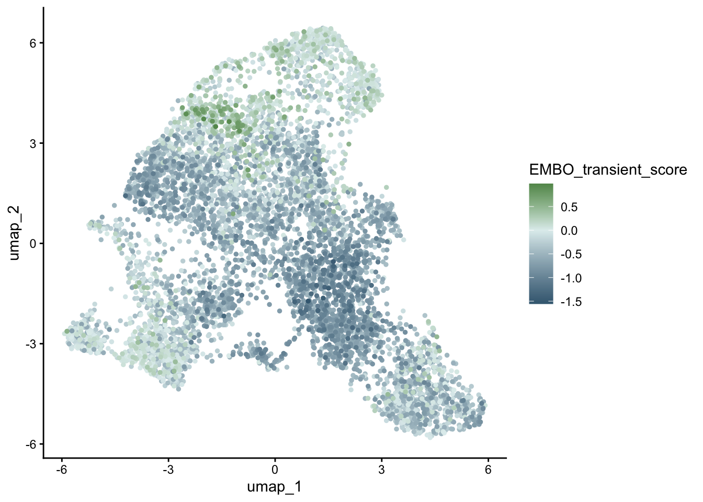
| Version | Author | Date |
|---|---|---|
| 68b5a89 | Michelle Meier | 2026-02-09 |
umapFileName <- sprintf('%s/%s_UMAP_EMBO_transitionscore.pdf', save_dir, name_current)
ggsave(umapFileName,
trans_score_legend,
device="pdf",
width=7,
height=7)
trans_score_nolegend <- trans_score_legend + NoLegend() + NoAxes() + theme(plot.title = element_blank())
umapFileName <- sprintf('%s/%s_UMAP_EMBO_transitionscore_STRIPPED.pdf', save_dir, name_current)
ggsave(umapFileName,
trans_score_nolegend,
device="pdf",
width=5,
height=5)UMAPs - transition scores (developmental)
p1 <- make_genescore_umap(seurat = level_03,
feature = "LEC_dev_score_1",
width = 5, height = 5,
path = save_dir,
colours = c("#d9d9d9", "darkgreen"),
name = name_current)
p1 + p2 + plot_layout(ncol = 2)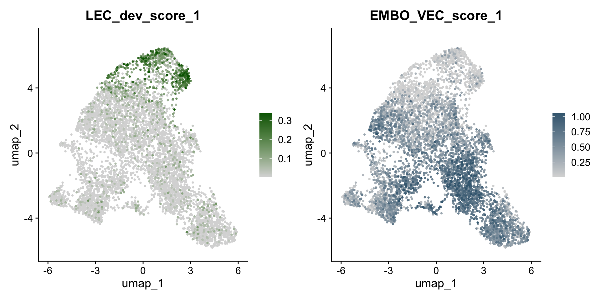
| Version | Author | Date |
|---|---|---|
| 68b5a89 | Michelle Meier | 2026-02-09 |
transition score:
md <- level_03[[]]
coords <- Embeddings(level_03[["umap"]])
md <- cbind(md, coords)
midpoint <- mean(range(md$EMBO_dev_transient_score))
# Order by absolute difference from the midpoint
md <- md[order(abs(md$EMBO_dev_transient_score - midpoint)), ]
# plot
trans_score_legend <- ggplot(md, aes(x = umap_1, y = umap_2, color = EMBO_dev_transient_score)) +
geom_point(size = 1) +
scale_color_gradient2(low = "#406880", high = "darkgreen", mid = "azure2") + #not keeping original green bc its too light
# viridis::scale_fill_viridis(option = "E", direction = 1) +
theme_classic()
trans_score_legend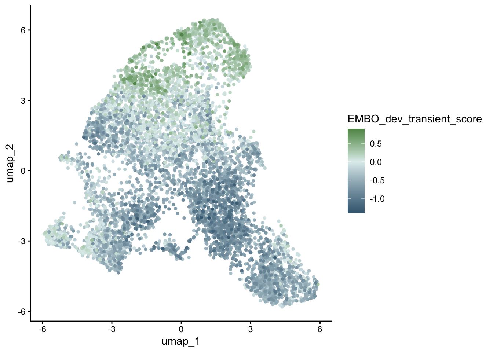
| Version | Author | Date |
|---|---|---|
| 68b5a89 | Michelle Meier | 2026-02-09 |
umapFileName <- sprintf('%s/%s_UMAP_EMBO_dev_transitionscore.pdf', save_dir, name_current)
ggsave(umapFileName,
trans_score_legend,
device="pdf",
width=7,
height=7)
trans_score_nolegend <- trans_score_legend + NoLegend() + NoAxes() + theme(plot.title = element_blank())
umapFileName <- sprintf('%s/%s_UMAP_EMBO_transitionscore_STRIPPED.pdf', save_dir, name_current)
ggsave(umapFileName,
trans_score_nolegend,
device="pdf",
width=5,
height=5)Alternatively, just highlight the transitions score.
make_genescore_umap(seurat = level_03,
feature = "EMBO_dev_transient_score",
width = 5, height = 5,
path = save_dir,
name = name_current)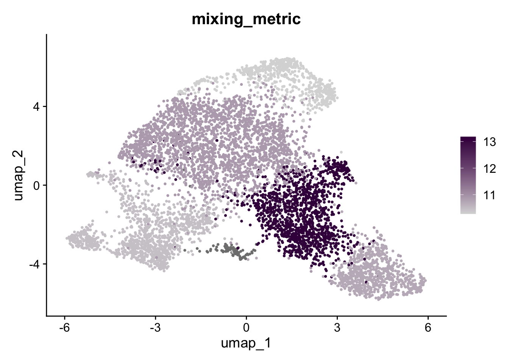
UMAPs - mixing metric
# add to object
mixing_metric <- mixing_metric[names(mixing_metric) != "iVEC"] #this cluster is only mutant, no mixing
new_meta <- lapply(mixing_metric, mean) %>% unlist() %>% as.data.frame() %>%
rownames_to_column("L3_celltype") %>% dplyr::rename(mixing_metric=".") %>%
full_join(level_03@meta.data, .)Joining with `by = join_by(L3_celltype)`rownames(new_meta) <- rownames(level_03@meta.data)
level_03@meta.data <- new_meta
# on UMAP
make_feature_umap(seurat = level_03,
feature = "mixing_metric",
width = 5, height = 5,
path = save_dir,
name = name_current)
Dotplot
level_03_relevel <- level_03
level_03_relevel <- SetIdent(level_03_relevel, value="L3_celltype")
Idents(level_03_relevel) <- factor(level_03_relevel@active.ident, level_03_celltpe_order)
dotplot <- DotPlot(object = level_03_relevel,
features = level_03_annotation_genes,
cluster.idents = F,
cols = expression_colours) + RotatedAxis() + coord_flip() + rotate_x + ylab("") + xlab("")
filename <- sprintf('%s/%s_L3_celltype_annotation.pdf', save_dir, name_current)
ggsave(filename,
dotplot,
device="pdf",
width=5,
height=4)
dotplot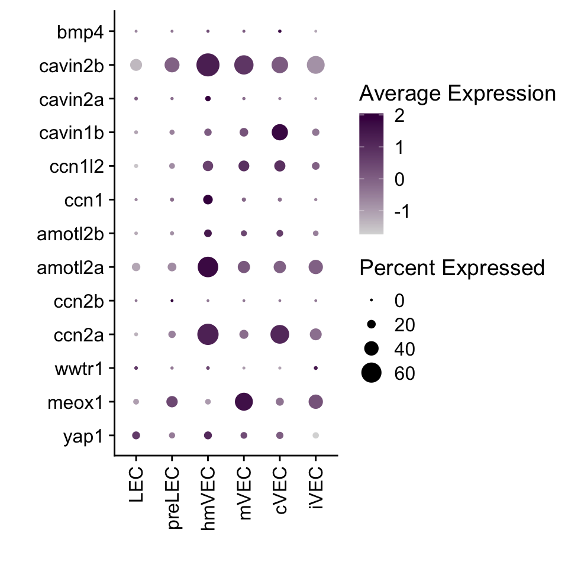
Hippo genes
level_03_relevel <- level_03
level_03_relevel <- SetIdent(level_03_relevel, value="L3_celltype")
Idents(level_03_relevel) <- factor(level_03_relevel@active.ident, level_03_celltpe_order)
dotplot <- DotPlot(object = level_03_relevel,
features = hippo_targets,
cluster.idents = F,
cols = expression_colours) + RotatedAxis() + coord_flip() + rotate_x + ylab("") + xlab("")
filename <- sprintf('%s/%s_L3_celltype_hippo.pdf', save_dir, name_current)
ggsave(filename,
dotplot,
device="pdf",
width=5,
height=4)
dotplot
| Version | Author | Date |
|---|---|---|
| ffc604c | Michelle Meier | 2026-05-11 |
Hippo gene split by genotype
Add new order.
level_03_celltpe_genotype_order <- c(
"LEC_wildtype",
"LEC_yap1_mutant",
"preLEC_wildtype",
"preLEC_yap1_mutant",
"hmVEC_wildtype",
"hmVEC_yap1_mutant",
"mVEC_wildtype",
"mVEC_yap1_mutant",
"cVEC_wildtype",
"cVEC_yap1_mutant",
"iVEC_wildtype",
"iVEC_yap1_mutant"
)level_03_relevel <- level_03
level_03_relevel$L3_celltype_genotype <- paste0(level_03_relevel$L3_celltype, "_", level_03_relevel$Genotype)
level_03_relevel <- SetIdent(level_03_relevel, value="L3_celltype_genotype")
Idents(level_03_relevel) <- factor(level_03_relevel@active.ident, rev(level_03_celltpe_genotype_order))
dotplot <- DotPlot(object = level_03_relevel,
features = hippo_targets,
cluster.idents = F,
cols = expression_colours) + rotate_x + ylab("") + xlab("")
filename <- sprintf('%s/%s_L3_celltype_genotype_hippo.pdf', save_dir, name_current)
ggsave(filename,
dotplot,
device="pdf",
width=7,
height=4)
dotplot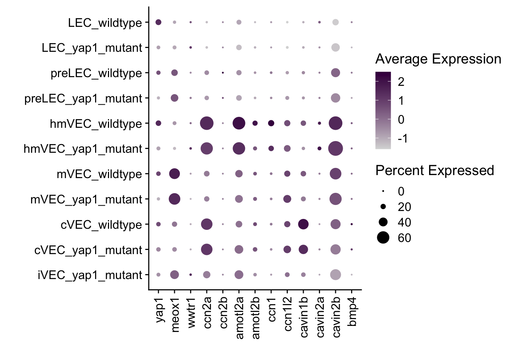
Selected other genes, split by genoptype
level_03_relevel <- level_03
level_03_relevel$L3_celltype_genotype <- paste0(level_03_relevel$L3_celltype, "_", level_03_relevel$Genotype)
level_03_relevel <- SetIdent(level_03_relevel, value="L3_celltype_genotype")
Idents(level_03_relevel) <- factor(level_03_relevel@active.ident, rev(level_03_celltpe_genotype_order))
dotplot <- DotPlot(object = level_03_relevel,
features = c("prox1a", "tbx1", "cdh6", "pcna", "mki67"),
cluster.idents = F,
cols = expression_colours) + rotate_x + ylab("") + xlab("")
filename <- sprintf('%s/%s_L3_celltype_genotype_cellcyclelec.pdf', save_dir, name_current)
ggsave(filename,
dotplot,
device="pdf",
width=6,
height=4)
dotplot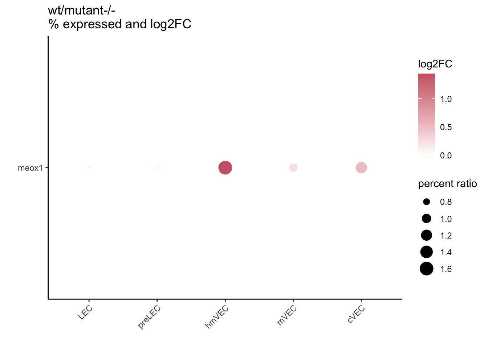
Dotplot - ratios
Just meox1
input_ratio <- hippo_gene_degs %>%
filter(., Gene == "meox1") %>%
mutate(., group = factor(group, levels = level_03_celltpe_order))
make_ratio_dotplots(input_ratio,
width = 5, height = 3,
name = paste0(name_current, "_meox1"), path = save_dir)
All hippo genes:
input_ratio <- hippo_gene_degs %>%
mutate(., group = factor(group, levels = level_03_celltpe_order))
make_ratio_dotplots(input_ratio,
width = 4, height = 4,
name = paste0(name_current, "_hippogenes"), path = save_dir)Warning: Removed 4 rows containing missing values or values outside the scale range
(`geom_point()`).
Removed 4 rows containing missing values or values outside the scale range
(`geom_point()`).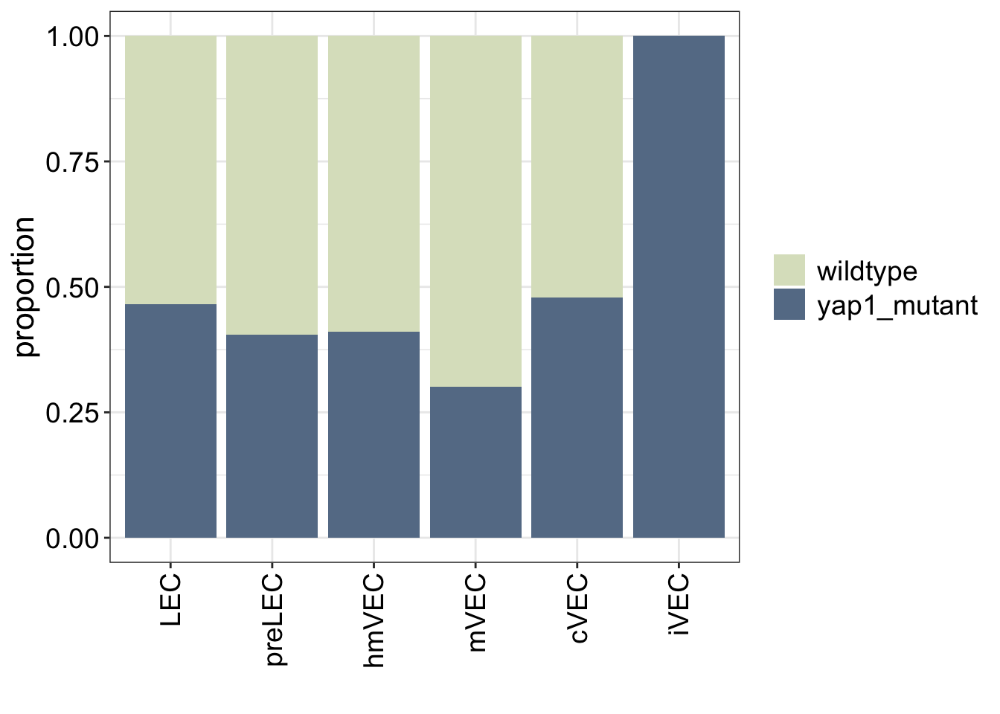
Barplot (and stats)
Genotype vs celltype
barplot <- level_03@meta.data %>%
mutate(., Genotype = factor(Genotype, levels = names(genotype_colours)),
L3_celltype = factor(L3_celltype, levels =level_03_celltpe_order) )%>%
group_by(Genotype, L3_celltype, .drop=FALSE) %>%
summarise(., count =n()) %>%
ggplot(., aes(x =L3_celltype, y = count, fill = Genotype)) +
geom_bar(stat="identity", position = "fill") +
plot_sizing + rotate_x +
scale_fill_manual(values = genotype_colours)+
ylab("proportion") + xlab("")`summarise()` has grouped output by 'Genotype'. You can override using the
`.groups` argument.filename <- sprintf('%s/%s_L3_celltype_genotype_barplot.pdf', save_dir, name_current)
ggsave(filename,
barplot,
device="pdf",
width=6,
height=4)
barplot
| Version | Author | Date |
|---|---|---|
| ffc604c | Michelle Meier | 2026-05-11 |
Stats to support this:
Using the chisq.posthoc.test package to perform a post-hoc analysis for this.
M <-table(level_03$Genotype, level_03$L3_celltype) + 0.001 #add very small number to deal with test sensitivity to zeros
global_test <- chisq.test(M)
global_test
Pearson's Chi-squared test
data: M
X-squared = 211.64, df = 5, p-value < 2.2e-16res <- chisq.posthoc.test(M) %>% as.data.frame() %>%
pivot_longer(., cols = level_03$L3_celltype %>% unique(), names_to = "L3_celltype", values_to = "entry") %>%
pivot_wider(., names_from = "Value", values_from = "entry")
res <- res %>%
distinct(., L3_celltype, .keep_all = T) %>% #residuals for 2 groups are mirrored
mutate(., Residuals = abs(Residuals),
is_sig = case_when(`p values` > 0.05 ~ "",
`p values` <= 0.0001 ~ "****",
`p values` <= 0.001 ~ "***",
`p values` <= 0.01 ~ "**",
`p values` <= 0.05 ~ "*"
)) %>%
select(., -Dimension)
res# A tibble: 6 × 4
L3_celltype Residuals `p values` is_sig
<chr> <dbl> <dbl> <chr>
1 mVEC 9.01 0 "****"
2 preLEC 0.110 1 ""
3 LEC 3.24 0.0143 "*"
4 hmVEC 0.335 1 ""
5 cVEC 4.33 0.000177 "***"
6 iVEC 11.1 0 "****"Add to barplot:
barplot <- level_03@meta.data %>%
group_by(Genotype, L3_celltype, .drop=FALSE) %>%
summarise(., count =n()) %>%
full_join(., res) %>%
mutate(., Genotype = factor(Genotype, levels = names(genotype_colours)),
L3_celltype = factor(L3_celltype, levels =level_03_celltpe_order) )%>%
mutate(., is_sig = ifelse(Genotype == "yap1_mutant", is_sig, NA)) %>%
ggplot(., aes(x =L3_celltype, y = count, fill = Genotype)) +
geom_bar(stat="identity", position = "fill") +
geom_text(aes(label = is_sig, y = 1.05),size=6) +
plot_sizing + rotate_x +
scale_fill_manual(values = genotype_colours)+
ylab("proportion") + xlab("") +
ggtitle(paste0("chisq p-value: ",global_test$p.value))`summarise()` has grouped output by 'Genotype'. You can override using the
`.groups` argument.
Joining with `by = join_by(L3_celltype)`filename <- sprintf('%s/%s_L3_celltype_genotype_barplot_stats.pdf', save_dir, name_current)
ggsave(filename,
barplot,
device="pdf",
width=6,
height=4)Warning: Removed 5 rows containing missing values or values outside the scale range
(`geom_text()`).barplotWarning: Removed 5 rows containing missing values or values outside the scale range
(`geom_text()`).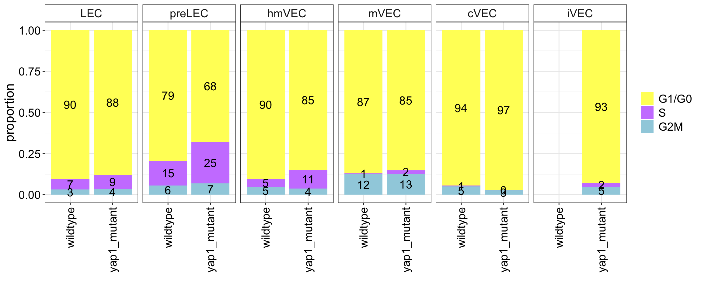
Genotype vs cell cycle stage (for each celltype)
#cell cycle
barplot <- level_03@meta.data %>%
mutate(., tricycle_stage = factor(tricycle_stage, levels = names(cols_cellcycle)),
L3_celltype = factor(L3_celltype, levels =level_03_celltpe_order),
Genotype = factor(Genotype, levels = names(genotype_colours))) %>%
group_by(tricycle_stage, L3_celltype,Genotype, .drop=FALSE) %>%
summarise(., count =n()) %>%
group_by(., Genotype, L3_celltype) %>%
mutate(., perc_pos = count/sum(count),
perc_label = round(perc_pos, 2)*100) %>%
ggplot(., aes(x =Genotype, y = count, fill = tricycle_stage)) +
geom_bar(stat="identity", position = "fill") +
geom_text(aes(label = perc_label, y = perc_pos), position = position_stack(vjust = 0.5), size=5)+
plot_sizing + rotate_x +
scale_fill_manual(values = cols_cellcycle)+
ylab("proportion") + xlab("") +
facet_wrap(~L3_celltype, nrow=1) + strip_fix`summarise()` has grouped output by 'tricycle_stage', 'L3_celltype'. You can
override using the `.groups` argument.filename <- sprintf('%s/%s_L3_celltype_tricycle_genotype_barplot.pdf', save_dir, name_current)
ggsave(filename,
barplot,
device="pdf",
width=12,
height=5)Warning: Removed 3 rows containing missing values or values outside the scale range
(`geom_text()`).barplotWarning: Removed 3 rows containing missing values or values outside the scale range
(`geom_text()`).
| Version | Author | Date |
|---|---|---|
| ffc604c | Michelle Meier | 2026-05-11 |
Stats to support this:
global_stats <- lapply(c("mVEC","preLEC", "LEC","hmVEC" ,"cVEC"), function(x){
filtered_seurat <- level_03@meta.data %>%
filter(., L3_celltype == x) %>% # for each cell type population
select(., Genotype, tricycle_stage)
M <-table(filtered_seurat$Genotype, filtered_seurat$tricycle_stage) + 0.001 #add very small number to deal with test sensitivity to zeros
Xsq <- chisq.test(M) # Prints test summary
df_return <- data.frame(statistic = Xsq$statistic,
pvalue= Xsq$p.value)
return(df_return)
})Warning in chisq.test(M): Chi-squared approximation may be incorrect
Warning in chisq.test(M): Chi-squared approximation may be incorrectnames(global_stats) <- c("mVEC","preLEC", "LEC","hmVEC" ,"cVEC")
global_stats <- global_stats %>% bind_rows(., .id = "L3_celltype") %>%
mutate(., is_sig = case_when(pvalue > 0.05 ~ "",
pvalue <= 0.0001 ~ "****",
pvalue <= 0.001 ~ "***",
pvalue <= 0.01 ~ "**",
pvalue<= 0.05 ~ "*"
))
global_stats L3_celltype statistic pvalue is_sig
X-squared...1 mVEC 7.951571 1.876456e-02 *
X-squared...2 preLEC 43.125726 4.318845e-10 ****
X-squared...3 LEC 1.067595 5.863741e-01
X-squared...4 hmVEC 19.431034 6.033989e-05 ****
X-squared...5 cVEC 2.907423 2.337013e-01 Using the chisq.posthoc.test package to perform a post-hoc analysis for this. Residuals only end up being meaningful for the celltypes with global changes.
post_hoc_tests_to_run <-global_stats %>% filter(., pvalue < 0.05) %>% pull(L3_celltype)
all_x_tests <- lapply(post_hoc_tests_to_run, function(x){
filtered_seurat <- level_03@meta.data %>%
filter(., L3_celltype == x) %>% # for each cell type population
select(., Genotype, tricycle_stage)
M <-table(filtered_seurat$Genotype, filtered_seurat$tricycle_stage) + 0.001 #add very small number to deal with test sensitivity to zeros
res <- chisq.posthoc.test(M) %>% as.data.frame() %>%
pivot_longer(., cols = level_03$tricycle_stage %>% unique(), names_to = "tricycle_stage", values_to = "entry") %>%
pivot_wider(., names_from = "Value", values_from = "entry")
return(res)
})Warning in chisq.test(x, ...): Chi-squared approximation may be incorrectnames(all_x_tests) <- post_hoc_tests_to_run
all_x_tests_df <- all_x_tests %>% bind_rows(., .id = "L3_celltype") %>%
distinct(., L3_celltype, tricycle_stage, .keep_all = T) %>% #residuals for 2 groups are mirrored
mutate(., Residuals = abs(Residuals),
is_sig = case_when(`p values` > 0.05 ~ "",
`p values` <= 0.0001 ~ "****",
`p values` <= 0.001 ~ "***",
`p values` <= 0.01 ~ "**",
`p values` <= 0.05 ~ "*"
)) %>%
select(., -Dimension)
all_x_tests_df# A tibble: 9 × 5
L3_celltype tricycle_stage Residuals `p values` is_sig
<chr> <chr> <dbl> <dbl> <chr>
1 mVEC G1/G0 0.947 1 ""
2 mVEC S 2.81 0.0297 "*"
3 mVEC G2M 0.130 1 ""
4 preLEC G1/G0 6.34 0 "****"
5 preLEC S 6.24 0 "****"
6 preLEC G2M 1.27 1 ""
7 hmVEC G1/G0 2.96 0.0186 "*"
8 hmVEC S 4.36 0.000077 "****"
9 hmVEC G2M 0.893 1 "" Barplot with stats:
#cell cycle
barplot <- level_03@meta.data %>%
group_by(tricycle_stage, L3_celltype,Genotype, .drop=FALSE) %>%
summarise(., count =n()) %>%
group_by(., Genotype, L3_celltype) %>%
mutate(., perc_pos = count/sum(count),
perc_label = round(perc_pos, 2)*100) %>%
ungroup() %>%
full_join(., all_x_tests_df) %>%
full_join(., global_stats %>% select(., is_sig, L3_celltype, pvalue) %>% dplyr::rename(is_sig_global=is_sig, pvalue_global=pvalue)) %>%
mutate(., tricycle_stage = factor(tricycle_stage, levels = names(cols_cellcycle)),
L3_celltype = factor(L3_celltype, levels =level_03_celltpe_order),
Genotype = factor(Genotype, levels = names(genotype_colours)),
is_sig = ifelse(Genotype == "yap1_mutant", is_sig, NA),
is_sig_global = ifelse(Genotype == "yap1_mutant", is_sig_global, NA),
pvalue_global = ifelse(Genotype == "yap1_mutant" & is_sig_global !="", pvalue_global, NA)) %>%
ggplot(., aes(x =Genotype, y = count, fill = tricycle_stage)) +
geom_bar(stat="identity", position = "fill") +
geom_text(aes(label = perc_label, y = perc_pos), position = position_stack(vjust = 0.5), size=5)+
geom_text(aes(label = is_sig, y = perc_pos), position = position_stack(vjust = 0.9), size=5)+
geom_text(aes(label = is_sig_global, y = 1.1, x= 1.5), size=7)+
geom_text(aes(label = pvalue_global, y = 1.05, x= 1.5), size=3)+
plot_sizing + rotate_x +
scale_fill_manual(values = cols_cellcycle)+
ylab("proportion") + xlab("") +
facet_wrap(~L3_celltype, nrow=1) + strip_fix`summarise()` has grouped output by 'tricycle_stage', 'L3_celltype'. You can
override using the `.groups` argument.
Joining with `by = join_by(tricycle_stage, L3_celltype)`
Joining with `by = join_by(L3_celltype)`filename <- sprintf('%s/%s_L3_celltype_tricycle_genotype_barplot_stats.pdf', save_dir, name_current)
ggsave(filename,
barplot,
device="pdf",
width=12,
height=5)Warning: Removed 24 rows containing missing values or values outside the scale range
(`geom_text()`).Warning: Removed 18 rows containing missing values or values outside the scale range
(`geom_text()`).Warning: Removed 24 rows containing missing values or values outside the scale range
(`geom_text()`).barplotWarning: Removed 24 rows containing missing values or values outside the scale range
(`geom_text()`).Warning: Removed 18 rows containing missing values or values outside the scale range
(`geom_text()`).Warning: Removed 24 rows containing missing values or values outside the scale range
(`geom_text()`).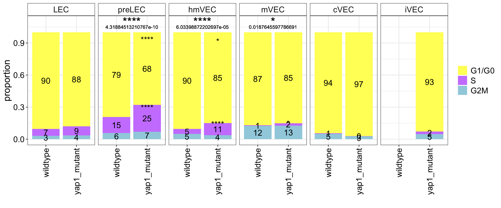
Volcano plot
degs_mark <- all_degs %>%
filter(., group == "hmVEC" & p_val_adj < 0.05)
hippo_mark <- all_degs %>%
filter(., group == "hmVEC" & Gene %in% hippo_targets)
plot <- all_degs %>%
filter(., group == "hmVEC") %>%
ggplot(., aes(x = avg_log2FC, y = -log10(p_val))) +
geom_point(colour="#d9d9d9") +
geom_point(data = degs_mark, colour="#969696") +
geom_point(data = hippo_mark, colour="red", size=2) +
ggrepel::geom_text_repel(data = hippo_mark, aes(label= Gene), size =5) +
plot_sizing + ylab("-log10(p-value)") + xlab("log2FC")
filename <- sprintf('%s/%s_hmVEC_volcano_adjpvalue.pdf', save_dir, name_current)
ggsave(filename,
plot,
device="pdf",
width=6,
height=5)
plot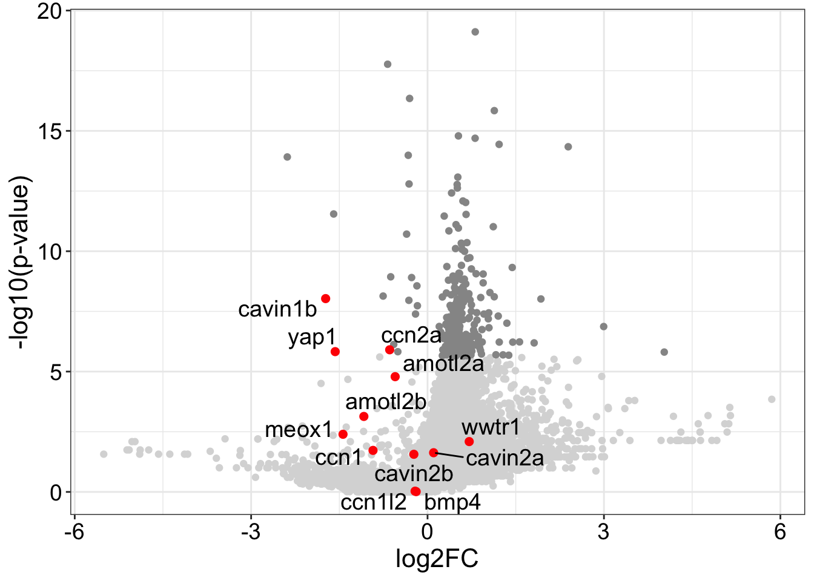
Just p-value
degs_mark <- all_degs %>%
filter(., group == "hmVEC" & p_val < 0.05)
hippo_mark <- all_degs %>%
filter(., group == "hmVEC" & Gene %in% hippo_targets)
plot <- all_degs %>%
filter(., group == "hmVEC") %>%
ggplot(., aes(x = avg_log2FC, y = -log10(p_val))) +
geom_point(colour="#d9d9d9") +
geom_point(data = degs_mark, colour="#969696") +
geom_point(data = hippo_mark, colour="red", size=2) +
ggrepel::geom_text_repel(data = hippo_mark, aes(label= Gene), size =5) +
plot_sizing + ylab("-log10(p-value)") + xlab("log2FC")
filename <- sprintf('%s/%s_hmVEC_volcano_pvalue.pdf', save_dir, name_current)
ggsave(filename,
plot,
device="pdf",
width=6,
height=5)
plot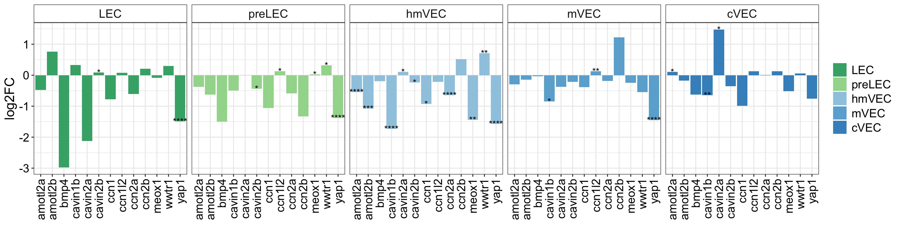
DEG barplots
p-value
plot <- hippo_gene_degs %>%
mutate(., group = factor(group, levels = level_03_celltpe_order)) %>%
mutate(., label = case_when(p_val > 0.05 ~ "",
p_val <= 0.0001 ~ "****",
p_val <= 0.001 ~ "***",
p_val <= 0.01 ~ "**",
p_val <= 0.05 ~ "*"
)) %>%
ggplot(., aes(x = Gene, y = avg_log2FC, fill = group)) +
geom_bar(position = position_dodge2(), stat = "identity") +
geom_text(aes(label=label)) +
plot_sizing + rotate_x +
scale_fill_manual(values = level_03_celltype_colours) +
facet_wrap(~group, nrow=1) + strip_fix + ylab("log2FC") + xlab("")
filename <- sprintf('%s/%s_DEG_hippo_barplot_pvalue.pdf', save_dir, name_current)
ggsave(filename,
plot,
device="pdf",
width=12,
height=4)
plot
adjusted
plot<- hippo_gene_degs %>%
mutate(., group = factor(group, levels = level_03_celltpe_order)) %>%
mutate(., label = case_when(p_val_adj > 0.05 ~ "",
p_val_adj <= 0.0001 ~ "****",
p_val_adj <= 0.001 ~ "***",
p_val_adj <= 0.01 ~ "**",
p_val_adj <= 0.05 ~ "*"
)) %>%
ggplot(., aes(x = Gene, y = avg_log2FC, fill = group)) +
geom_bar(position = position_dodge2(), stat = "identity") +
geom_text(aes(label=label)) +
plot_sizing + rotate_x +
scale_fill_manual(values = level_03_celltype_colours) +
facet_wrap(~group, nrow=1) + strip_fix+ ylab("log2FC") + xlab("")
filename <- sprintf('%s/%s_DEG_hippo_barplot_adjustedpvalue.pdf', save_dir, name_current)
ggsave(filename,
plot,
device="pdf",
width=12,
height=4)
plot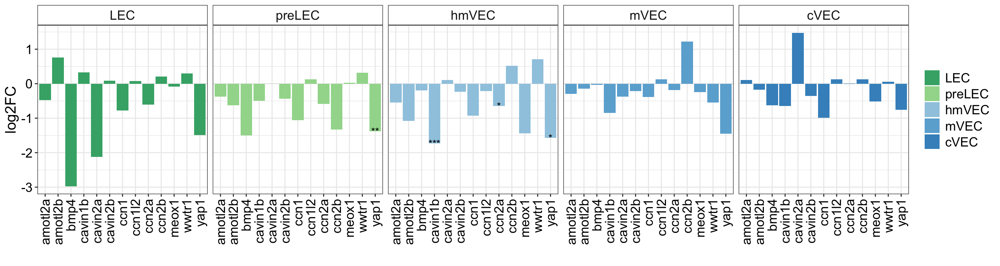
GO plot for IL_VEC
plot <- go_terms %>%
mutate(., Term = gsub("_WP.*", "", Term)) %>%
filter(., cluster == "iVEC" & Adjusted.P.value < 0.05) %>%
ggplot(., aes(y = Genes, x = Combined.Score)) +
geom_bar(stat="identity", fill = "purple4") +
geom_text(aes(label = Term, x=0), colour = "grey90", size = 6, hjust=-0.01) +
plot_sizing + xlab("enrichR score")
filename <- sprintf('%s/%s_ivec_barplot_GOterms.pdf', save_dir, name_current)
ggsave(filename,
plot,
device="pdf",
width=10,
height=4)
plot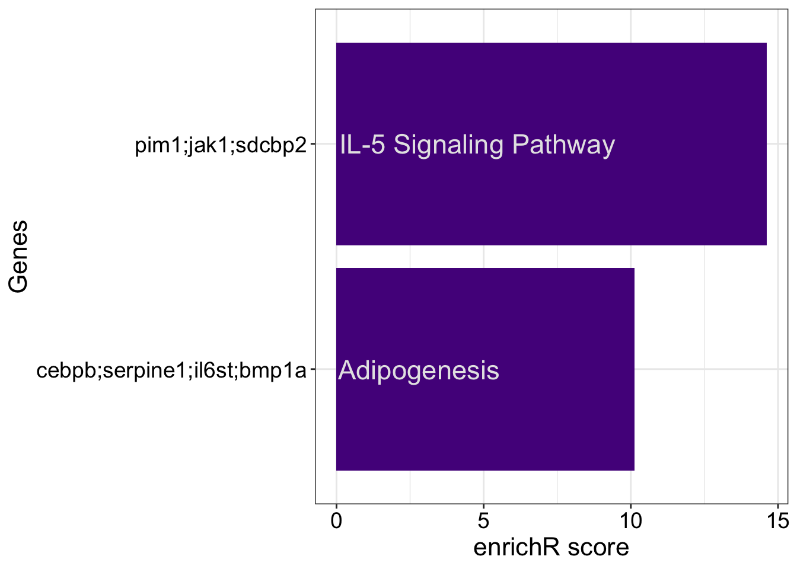
| Version | Author | Date |
|---|---|---|
| ffc604c | Michelle Meier | 2026-05-11 |
Boxplot for scores
Normality test: KS only, shapiro can’t handle > 5000 sample size. If the p-value is > 0.05 then distribution is significantly different from normal.
Which means:
for pvalue < 0.05 -> non-parametric test (KW+wilcox)
for pvalue > 0.05 -> parametric test (ANOVA+ttest)
Check for normality for all scores:
all_scores <- c("hippo_1", "mapk_1", "wnt_1", "ap1_1", "EMBO_LEC_score_1", "LEC_dev_score_1",
"EMBO_VEC_score_1", "EMBO_transient_score", "EMBO_dev_transient_score")
all_res <- lapply(all_scores, function(score){
data_in <- level_03@meta.data %>% pull(score)
df_out <- data.frame(ks_res = ks.test(data_in, "pnorm")$p.value)
plots_out <- ggdensity(data_in) + ggqqplot(data_in) + plot_layout(ncol =1)+ plot_annotation(title = score)
return(list(plot= plots_out, stats=df_out))
})Warning in ks.test.default(data_in, "pnorm"): ties should not be present for
the one-sample Kolmogorov-Smirnov testnames(all_res) <- all_scoresShow normality plots
plot_list <- lapply(all_res, function(item) wrap_elements(item$plot))
wrap_plots(plot_list)
| Version | Author | Date |
|---|---|---|
| ffc604c | Michelle Meier | 2026-05-11 |
Show stats results
lapply(all_res, function(item) item$stats) %>% bind_rows(., .id="score") score ks_res
1 hippo_1 0
2 mapk_1 0
3 wnt_1 0
4 ap1_1 0
5 EMBO_LEC_score_1 0
6 LEC_dev_score_1 0
7 EMBO_VEC_score_1 0
8 EMBO_transient_score 0
9 EMBO_dev_transient_score 0All are significant, so everything will be non-parametric! I think this is also related to the large number of cells..
Make boxplots with stats for everything:
run_boxplot_stats_adjusted_pval <- function(df_in= level_03@meta.data,
score,
celltype_order){
#new labels for x axis
new_labels <- df_in %>%
select(., score, L3_celltype, Genotype) %>%
mutate(., L3_celltype = factor(L3_celltype, levels = celltype_order)) %>%
group_by(Genotype, L3_celltype) %>%
summarise(., count = n()) %>%
group_by(L3_celltype) %>%
summarise(., label = paste0(L3_celltype,"\nwt=", count[1] , ", mut=",count[2])) %>%
pull(label) %>% unique()
#rename
colnames(df_in)[colnames(df_in) == score] <- "score"
#y limits for test
y_max <- df_in$score %>% max()
y_pairwise <- y_max + (y_max*0.2)
y_global <- y_max + (y_max*0.4)
#get stats
stat_list <- list()
stat_list[["global"]] <- compare_means(score ~ Genotype,
data = df_in,
method = "kruskal.test")
stat_list[["pairwise"]] <- compare_means(score ~ Genotype,
data =df_in,
group.by = "L3_celltype",
method = "wilcox.test") %>%
mutate(., sig_sign = case_when(p.adj > 0.05 ~ "ns", #add for adjusted
p.adj <= 0.05 & p.adj > 0.01 ~ "*",
p.adj <= 0.01 & p.adj > 0.001 ~ "**",
p.adj <= 0.001 & p.adj > 0.0001 ~ "***",
p.adj <= 0.0001 ~ "****"))
plot <- df_in %>%
select(., score, L3_celltype, Genotype) %>%
mutate(., L3_celltype = factor(L3_celltype, levels = celltype_order),
Genotype = factor(Genotype, levels = c("wildtype", "yap1_mutant"))) %>%
ggplot(.) +
geom_boxplot(aes(x = L3_celltype, y = score, fill = Genotype),
position = position_dodge2(),outlier.shape = NA) +
scale_fill_manual(values = genotype_colours) +
theme_bw(base_size = 14)+
theme(axis.text.x = element_text(angle = 90, vjust = 0.5, hjust=1, size=15)) +
xlab("") + ylab(paste0(score, " score")) +
geom_jitter(aes(x = L3_celltype, y = score, fill = Genotype),
size = 0.1, alpha = 0.5,
position = position_jitterdodge(jitter.width = 0.3, dodge.width = 0.75)) +
geom_text(data = stat_list$pairwise, aes(x = L3_celltype, y = y_pairwise, label = sig_sign)) +
geom_text(data = stat_list$global, aes(x = 2.5, y = y_global, label = paste0(method, ", p = ", p.adj))) +
scale_x_discrete(labels= new_labels) +
ggtitle(score)
df_stats <- bind_rows(stat_list)
return(list(plot=plot, stat=df_stats))
}Run for all scores:
results <- lapply(all_scores, function(score_input) run_boxplot_stats_adjusted_pval(score = score_input,
celltype_order = level_03_celltpe_order))plot_list <- lapply(results, function(item) item$plot)
patch <- wrap_plots(plot_list, guides = "collect")
filename <- sprintf('%s/%s_module_scores_boxplots.pdf', save_dir, name_current)
ggsave(filename,
patch,
device="pdf",
width=15,
height=15)
patch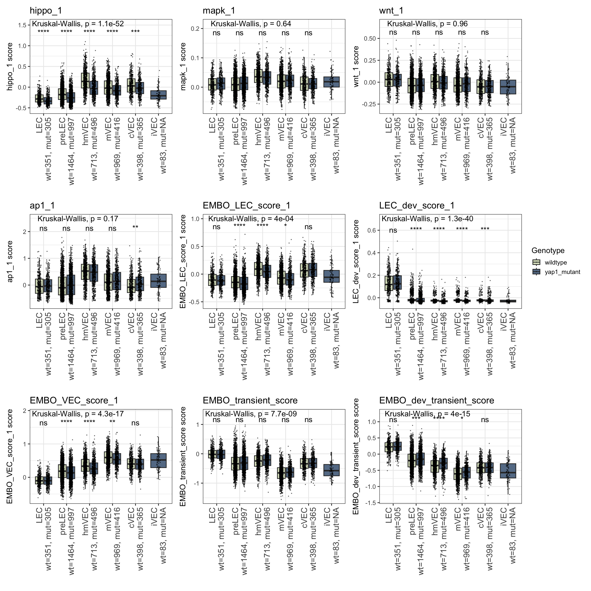
| Version | Author | Date |
|---|---|---|
| ffc604c | Michelle Meier | 2026-05-11 |
Show stats details:
names(results) <- all_scores
stats_DF <- lapply(results, function(item) item$stat) %>% bind_rows(., .id="score")
#also export
filename <- sprintf("%s/%s_module_scores_boxplots_stats.csv", save_dir, name_current)
write.csv(x = stats_DF, file = filename, row.names = FALSE)
DT::datatable(stats_DF, class = 'cell-border stripe', rownames = FALSE)Make plots with raw pvalue:
run_boxplot_stats_RAW_pval <- function(df_in= level_03@meta.data,
score,
celltype_order){
#new labels for x axis
new_labels <- df_in %>%
select(., score, L3_celltype, Genotype) %>%
mutate(., L3_celltype = factor(L3_celltype, levels = celltype_order)) %>%
group_by(Genotype, L3_celltype) %>%
summarise(., count = n()) %>%
group_by(L3_celltype) %>%
summarise(., label = paste0(L3_celltype,"\nwt=", count[1] , ", mut=",count[2])) %>%
pull(label) %>% unique()
#rename
colnames(df_in)[colnames(df_in) == score] <- "score"
#y limits for test
y_max <- df_in$score %>% max()
y_pairwise <- y_max + (y_max*0.2)
y_global <- y_max + (y_max*0.4)
#get stats
stat_list <- list()
stat_list[["global"]] <- compare_means(score ~ Genotype,
data = df_in,
method = "kruskal.test")
stat_list[["pairwise"]] <- compare_means(score ~ Genotype,
data =df_in,
group.by = "L3_celltype",
method = "wilcox.test")
plot <- df_in %>%
select(., score, L3_celltype, Genotype) %>%
mutate(., L3_celltype = factor(L3_celltype, levels = celltype_order),
Genotype = factor(Genotype, levels = c("wildtype", "yap1_mutant"))) %>%
ggplot(.) +
geom_boxplot(aes(x = L3_celltype, y = score, fill = Genotype),
position = position_dodge2(),outlier.shape = NA) +
scale_fill_manual(values = genotype_colours) +
theme_bw(base_size = 14)+
theme(axis.text.x = element_text(angle = 90, vjust = 0.5, hjust=1, size=15)) +
xlab("") + ylab(paste0(score, " score")) +
geom_jitter(aes(x = L3_celltype, y = score, fill = Genotype),
size = 0.1, alpha = 0.5,
position = position_jitterdodge(jitter.width = 0.3, dodge.width = 0.75)) +
geom_text(data = stat_list$pairwise, aes(x = L3_celltype, y = y_pairwise, label = p.signif)) +
geom_text(data = stat_list$global, aes(x = 2.5, y = y_global, label = paste0(method, ", p = ", p.adj))) +
scale_x_discrete(labels= new_labels) +
ggtitle(paste0(score, ", RAW PVALUE"))
return(plot)
}Run for all scores:
plot_list <- lapply(all_scores, function(score_input) run_boxplot_stats_RAW_pval(score = score_input,
celltype_order = level_03_celltpe_order))patch <- wrap_plots(plot_list, guides = "collect")
filename <- sprintf('%s/%s_module_scores_boxplots_RAWpvalue.pdf', save_dir, name_current)
ggsave(filename,
patch,
device="pdf",
width=15,
height=15)
patch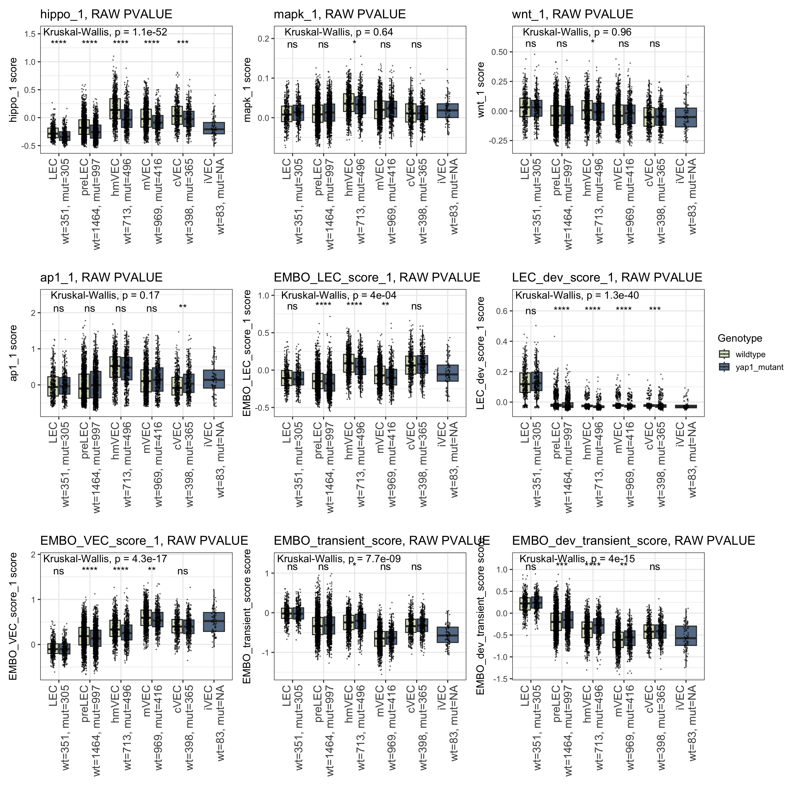
| Version | Author | Date |
|---|---|---|
| ffc604c | Michelle Meier | 2026-05-11 |
sessionInfo()R version 4.5.0 (2025-04-11)
Platform: aarch64-apple-darwin20
Running under: macOS Sequoia 15.7.4
Matrix products: default
BLAS: /Library/Frameworks/R.framework/Versions/4.5-arm64/Resources/lib/libRblas.0.dylib
LAPACK: /Library/Frameworks/R.framework/Versions/4.5-arm64/Resources/lib/libRlapack.dylib; LAPACK version 3.12.1
locale:
[1] en_US.UTF-8/en_US.UTF-8/en_US.UTF-8/C/en_US.UTF-8/en_US.UTF-8
time zone: Australia/Melbourne
tzcode source: internal
attached base packages:
[1] stats4 stats graphics grDevices datasets utils methods
[8] base
other attached packages:
[1] chisq.posthoc.test_0.1.2 qs2_0.1.7
[3] scran_1.38.0 scater_1.38.0
[5] scuttle_1.20.0 patchwork_1.3.2
[7] clustree_0.5.1 ggraph_2.2.2
[9] ggpubr_0.6.2 scDblFinder_1.24.0
[11] SingleCellExperiment_1.32.0 SummarizedExperiment_1.40.0
[13] Biobase_2.70.0 GenomicRanges_1.62.1
[15] Seqinfo_1.0.0 IRanges_2.44.0
[17] S4Vectors_0.48.0 BiocGenerics_0.56.0
[19] generics_0.1.4 MatrixGenerics_1.22.0
[21] matrixStats_1.5.0 Seurat_5.4.0
[23] SeuratObject_5.3.0 sp_2.2-0
[25] here_1.0.2 lubridate_1.9.4
[27] forcats_1.0.1 stringr_1.5.1
[29] dplyr_1.1.4 purrr_1.2.1
[31] readr_2.1.6 tidyr_1.3.2
[33] tibble_3.3.1 ggplot2_4.0.1
[35] tidyverse_2.0.0 workflowr_1.7.1
loaded via a namespace (and not attached):
[1] fs_1.6.6 spatstat.sparse_3.1-0 bitops_1.0-9
[4] httr_1.4.7 RColorBrewer_1.1-3 tools_4.5.0
[7] sctransform_0.4.3 backports_1.5.0 DT_0.34.0
[10] utf8_1.2.6 R6_2.6.1 lazyeval_0.2.2
[13] uwot_0.2.4 withr_3.0.2 gridExtra_2.3
[16] progressr_0.18.0 textshaping_1.0.4 cli_3.6.5
[19] spatstat.explore_3.7-0 fastDummies_1.7.5 labeling_0.4.3
[22] sass_0.4.10 S7_0.2.1 spatstat.data_3.1-9
[25] ggridges_0.5.7 pbapply_1.7-4 systemfonts_1.3.1
[28] Rsamtools_2.26.0 parallelly_1.46.1 limma_3.66.0
[31] rstudioapi_0.17.1 BiocIO_1.20.0 crosstalk_1.2.2
[34] vroom_1.6.7 ica_1.0-3 spatstat.random_3.4-4
[37] car_3.1-3 Matrix_1.7-3 ggbeeswarm_0.7.3
[40] abind_1.4-8 lifecycle_1.0.4 whisker_0.4.1
[43] yaml_2.3.10 edgeR_4.8.2 carData_3.0-5
[46] SparseArray_1.10.8 Rtsne_0.17 grid_4.5.0
[49] promises_1.5.0 dqrng_0.4.1 crayon_1.5.3
[52] miniUI_0.1.2 lattice_0.22-6 beachmat_2.26.0
[55] cowplot_1.2.0 cigarillo_1.0.0 pillar_1.11.1
[58] knitr_1.50 metapod_1.18.0 rjson_0.2.23
[61] xgboost_3.1.3.1 future.apply_1.20.1 codetools_0.2-20
[64] glue_1.8.0 getPass_0.2-4 spatstat.univar_3.1-6
[67] data.table_1.18.0 vctrs_0.6.5 png_0.1-8
[70] spam_2.11-3 gtable_0.3.6 cachem_1.1.0
[73] xfun_0.52 S4Arrays_1.10.1 mime_0.13
[76] tidygraph_1.3.1 survival_3.8-3 statmod_1.5.1
[79] bluster_1.20.0 fitdistrplus_1.2-5 ROCR_1.0-11
[82] nlme_3.1-168 bit64_4.6.0-1 RcppAnnoy_0.0.23
[85] GenomeInfoDb_1.46.2 rprojroot_2.1.1 bslib_0.9.0
[88] irlba_2.3.5.1 vipor_0.4.7 KernSmooth_2.23-26
[91] otel_0.2.0 tidyselect_1.2.1 processx_3.8.6
[94] bit_4.6.0 compiler_4.5.0 curl_7.0.0
[97] git2r_0.36.2 BiocNeighbors_2.4.0 DelayedArray_0.36.0
[100] plotly_4.11.0 stringfish_0.18.0 rtracklayer_1.70.1
[103] scales_1.4.0 lmtest_0.9-40 callr_3.7.6
[106] digest_0.6.37 goftest_1.2-3 spatstat.utils_3.2-1
[109] rmarkdown_2.29 XVector_0.50.0 htmltools_0.5.8.1
[112] pkgconfig_2.0.3 fastmap_1.2.0 rlang_1.1.6
[115] htmlwidgets_1.6.4 UCSC.utils_1.6.1 shiny_1.12.1
[118] farver_2.1.2 jquerylib_0.1.4 zoo_1.8-15
[121] jsonlite_2.0.0 BiocParallel_1.44.0 BiocSingular_1.26.1
[124] RCurl_1.98-1.17 magrittr_2.0.3 Formula_1.2-5
[127] dotCall64_1.2 Rcpp_1.0.14 viridis_0.6.5
[130] reticulate_1.44.1 stringi_1.8.7 MASS_7.3-65
[133] plyr_1.8.9 parallel_4.5.0 listenv_0.10.0
[136] ggrepel_0.9.6 deldir_2.0-4 graphlayouts_1.2.2
[139] Biostrings_2.78.0 splines_4.5.0 tensor_1.5.1
[142] hms_1.1.4 locfit_1.5-9.12 ps_1.9.1
[145] igraph_2.2.1 spatstat.geom_3.7-0 ggsignif_0.6.4
[148] RcppHNSW_0.6.0 reshape2_1.4.5 ScaledMatrix_1.18.0
[151] XML_3.99-0.20 evaluate_1.0.5 RcppParallel_5.1.11-1
[154] renv_1.1.4 BiocManager_1.30.27 tweenr_2.0.3
[157] tzdb_0.5.0 httpuv_1.6.16 RANN_2.6.2
[160] polyclip_1.10-7 future_1.69.0 scattermore_1.2
[163] ggforce_0.5.0 rsvd_1.0.5 broom_1.0.11
[166] xtable_1.8-4 restfulr_0.0.16 RSpectra_0.16-2
[169] rstatix_0.7.3 later_1.4.2 ragg_1.5.0
[172] viridisLite_0.4.2 memoise_2.0.1 beeswarm_0.4.0
[175] GenomicAlignments_1.46.0 cluster_2.1.8.1 timechange_0.3.0
[178] globals_0.18.0